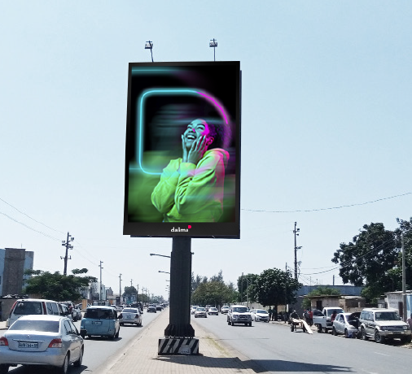

DALIMA | Publicidade Digital Outdoor
Av. 25 de Setembro, 2400 RC drt Maputo, Moçambique

Xiquelene B
EstáticoCruzamento da Av. FPLM com Rua da Soveste em direcç. à Praça dos Heróis
Xiquelene A
EstáticoCruzamento da Av. FPLM com Rua da Soveste em direcç. ao M. Xiquelene

JANET
DigitalAv. Vladmir Lenine perto do Mercado Janet

Times Square A
DigitalAv. Avenida Zedequias Manganhela, rua do pântano.
Times Square B
EstáticoAv. Avenida Zedequias Manganhela, rua do pântano.

Cardoso
EstáticoAv. 25 de Setembro no prédio Cardoso, perto do Palácio da Justiça.
Vista da rua


OUA
DigitalAv. OUA na rotundana das bombas de gasolina da Petromoc


FPLM B
EstáticoAv. Das FPLM, perto do Hospital de Mavalane em direcç. à Praça dos Heróis

FPLM A
DigitalAv. das FPLM, perto do Hospital de Mavalane


JULIUS A
DigitalRotunda das Av. Julius Nyerere e Av. Kenneth Kaunda em direcção à Av. da Marginal
Vista da rua
JULIUS B
Digital
Rotunda das Av. Julius Nyerere e Av. Kenneth Kaunda em direcção à Av. da Marginal
Vista da rua